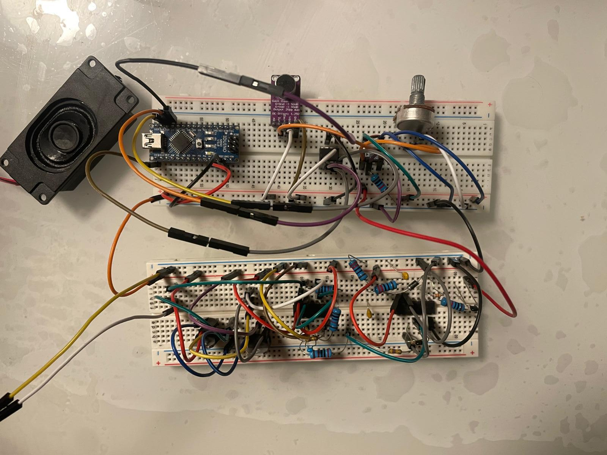

← Retour au portfolio
Système de radio analogique avec Arduino
ECE – 1A cycle ingénieur · 2024

Objectif du projet
Reproduire un système de radio complet à partir de blocs analogiques
(diodes, transistors, filtres RC) pilotés par un Arduino, afin de moduler
et démoduler un signal sonore puis de l’amplifier pour un haut‑parleur.
Le but : comprendre toute la chaîne radio, de la captation audio à la démodulation.
Contexte
Projet réalisé en 1ère année de cycle ingénieur, mêlant
électronique analogique et systèmes embarqués.
Architecture globale du système
Chaîne analogique
- Microphone électret.
- Amplification à transistors.
- Modulation analogique.
- Démodulation diode + filtre RC.
- Amplification finale pour haut‑parleur.
Rôle de l’Arduino
- Génération de signaux.
- Mesures analogiques.
- Gestion boutons / potentiomètres.
- Debug via port série.
Réalisation et fonctionnalités
- Captation audio Micro + pré‑amplification.
- Modulation Injection sur porteuse.
- Démodulation Détection d’enveloppe.
- Amplification finale Étages de puissance.
- Contrôle Arduino Mesures et réglages.
- Tests oscilloscope Vérification des signaux.
Aspects électroniques mis en avant
- Dimensionnement RC et choix des composants.
- Analyse fréquentielle des filtres.
- Compréhension de la démodulation par diode.
- Gestion du bruit et du découplage.
Rôle personnel & compétences développées
- Câblage et tests analogiques.
- Programmation Arduino.
- Analyse oscilloscope.
- Compréhension complète de la chaîne radio.
- Rédaction du schéma et explications techniques.
Résultats
Le montage final transmet un signal audio modulé/démodulé et le restitue sur haut‑parleur.
Le projet combine efficacement électronique analogique et
microcontrôleur.
Arduino
C
Diodes
Transistors
Modulation
Démodulation
Électronique analogique
Oscilloscope